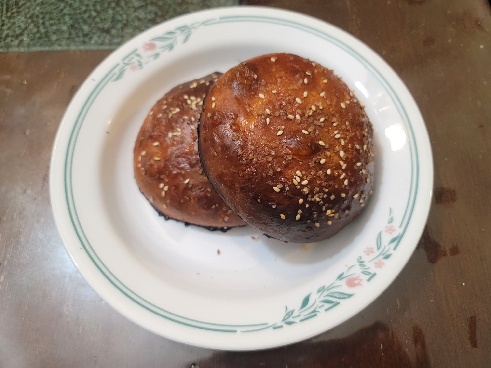

Krachel

Ingredients:
Krachel:
- 4 1/2 cups (563 g) Flour
- 3/4 cup Milk, warm
- 1/4 oz Dry active yeast
- 1/2 cup (100 g) Sugar
- 1 1/2 tsp Salt
- 2 tsp Anise seeds
- 2 tsp Sesame seeds, preferably unhulled
- 2 Eggs
- 1/2 cup Butter, softened
- 2 tbsp Orange flower water
Egg Wash + Toppings:
- 1 Egg + 1 tbsp Milk, whisked
- Sesame seeds and/or Turbinado sugar
Instructions:
- Heat the milk in a microwave to between 100-110 degrees Fahrenheit. Then stir in the yeast. Let rest for about 10 minutes to activate.
- Combine the flour, sugar, salt, anise seeds, and sesame seeds into a large mixing bowl and whisk together. Then add in the eggs, butter, orange flower water, and the milk mixed with yeast. Mix together and then knead until smooth, about 15 minutes.
- Form the dough into a tight ball and transfer to a greased container and cover. Let rise for 1-2 hours, or until doubled in size.
- Punch down the dough and turn it over. Let rise again for about 45-60 minutes.
- Divide the dough into 12 equal pieces and form into balls onto a parchment paper lined bakinf sheet. Cover with a damp towel and let the balls rest for about 5-10 minutes.
- Slightly flatten each of the ball of dough with your hand. Then let rise for another hour or more or until doubled in size.
- While waiting, preheat the oven to 375 degrees Fahrenheit.
- Brush the krachel with egg wash and top with sesame seeds and/or turbinado sugar. Place the krachel into the oven and bake for 15-20 mintues, rotating the pans halfway for even browning.
- Remove from the oven and let cool before serving. Serve on their own or with jam.